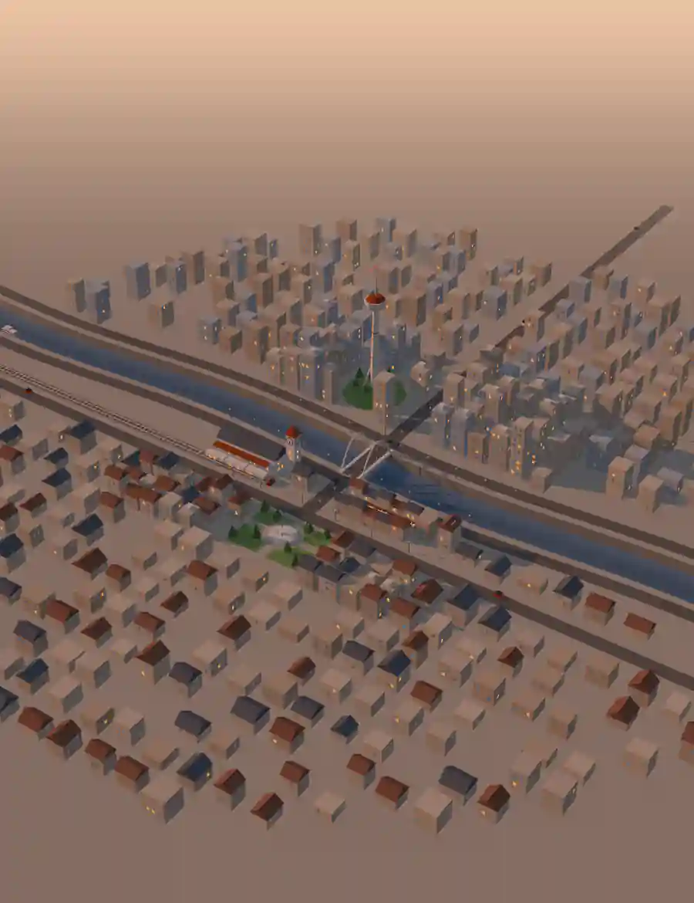

전망 타워
북쪽 언덕
강 북쪽 언덕 위에 선, 도시에서 가장 높은 탑이에요. 꼭대기 불빛은 밤에도 멀리서 보여요.

강을 사이에 두고 명소 5곳이 모인 작은 도시예요.
끌어서 도시를 돌리고, 휠로 가까이 볼 수 있어요.
옆으로 밀어 도시를 돌리고, 두 손가락으로 가까이 볼 수 있어요.
명소를 고르면 그곳으로 가까이 가요.
목록에서 명소를 고르면 설명을 볼 수 있어요.
북쪽 언덕
강 북쪽 언덕 위에 선, 도시에서 가장 높은 탑이에요. 꼭대기 불빛은 밤에도 멀리서 보여요.
강 한가운데
강 남쪽과 북쪽을 잇는 다리예요. 밤에는 아치를 따라 불이 켜지고 차 불빛이 오가요.
서쪽 강가
기찻길이 끝나는 작은 역이에요. 역 끝 시계탑은 강 건너에서도 보여요.
동쪽 강가
낮은 가게 사이로 난 좁은 골목이에요. 해가 지면 골목 위에 전구 줄이 켜져요.
남쪽 공원
도시 남쪽 공원 한가운데 있는 분수예요. 해가 지면 분수 둘레에 작은 불이 켜져요.